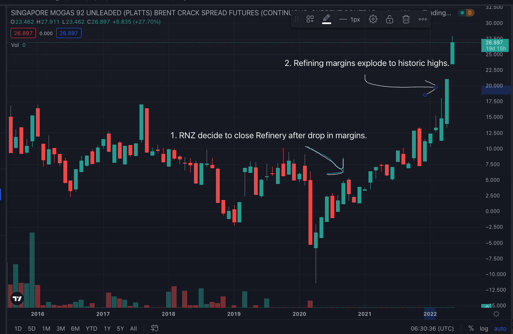

Marsden Point Refinery is currenlty only shut down, but RNZ management want to destroy it. It critical piece of infrastructure which once provided.
The decision to close was taken under the cover of the Covid pandemic, ignoring the warnings of an independent report on the risks of moving to a North Asian import only model by:
This exposes us to global supply shock, price and quality risks and removes options for the development of our domestic energy resources - such as our recycled watse biomass or petroleum reserves The foolishness of this move was immediately demonstrated as geopolitcal events pushed global refining margins are at record highs

footnote (apart from a little which the RNZ C-Suite and board hold back for satanic rituals)